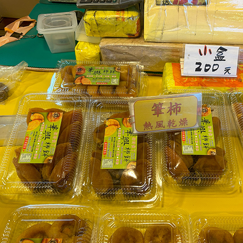
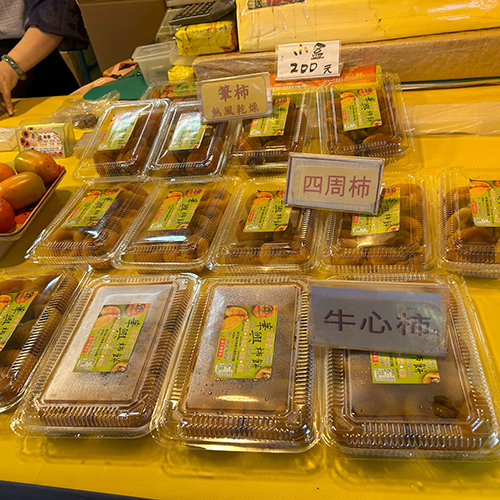
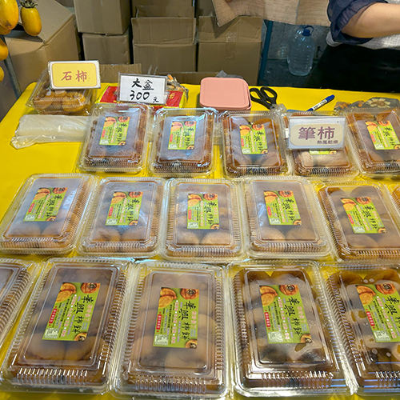
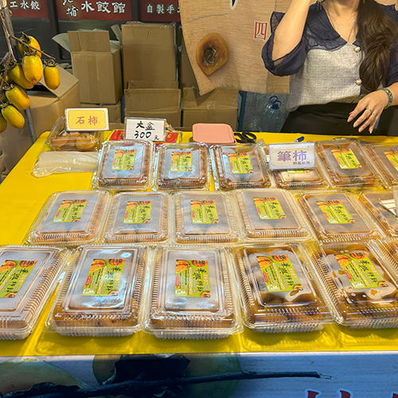

華興柿餅
造訪北埔迷人風土人情，從短短200公尺 老街尋找純樸客家情意。
美食推薦
華興柿餅
九降風──農曆九月颳起的北風，因為九降風乾冷，濕度低，做出來的柿餅甜美健康可口。
北埔柿子屬「石柿」種，果肉纖細甜度高、富韌性、口感佳，加上新竹特有的「九降風」乾冷溫低，可做出甜美可口的
柿餅，即是柿餅的主要產區之一，柿子的加工柿餅：將成熟度約七、八分的柿子摘下，經過刨皮、鋪曬、壓捏、烘乾殺
菌等手續，成為風味獨特旳柿餅，是北埔地區遠近馳名的柿子產品，在低溫冷凍下可保存更久。





營業時間
星期日：10:00~18:00
星期一：10:00~18:00
星期二：10:00~18:00
星期三：10:00~18:00
星期四：10:00~18:00
星期五：10:00~18:00
星期六：10:00~18:00
相關資訊